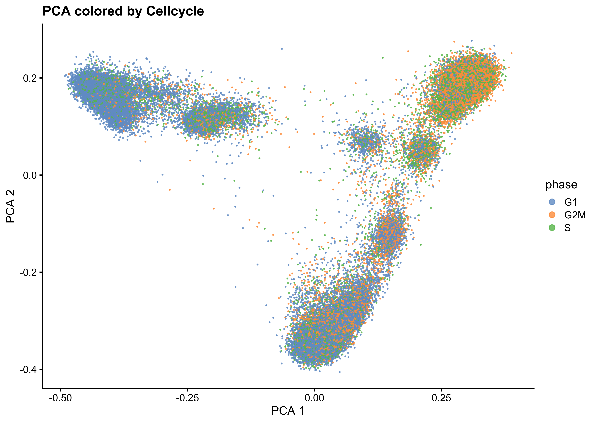
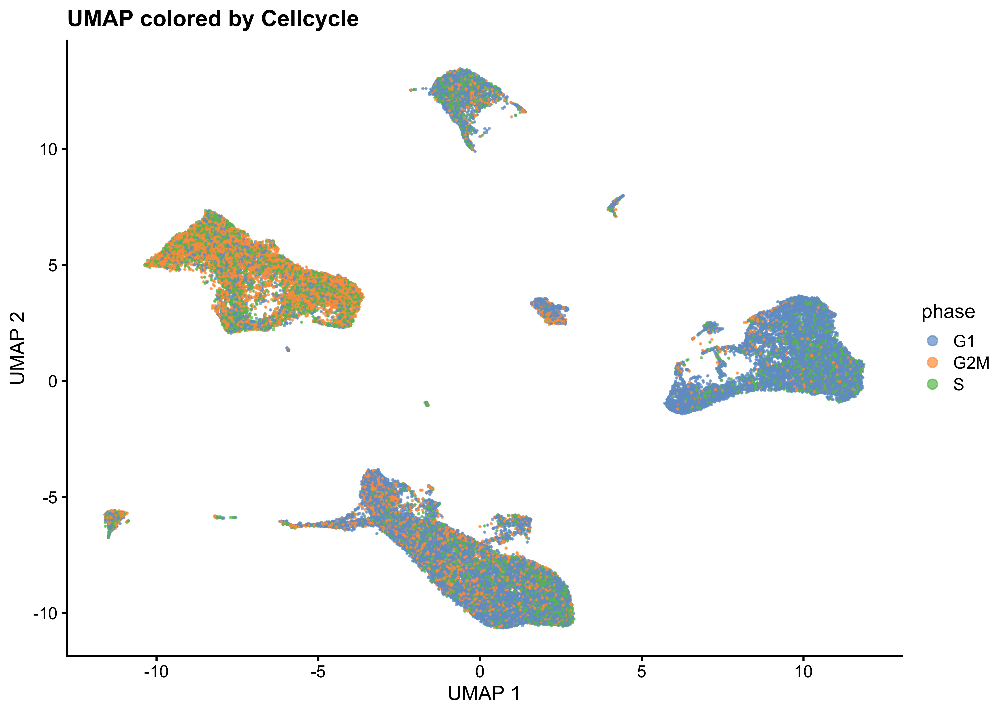
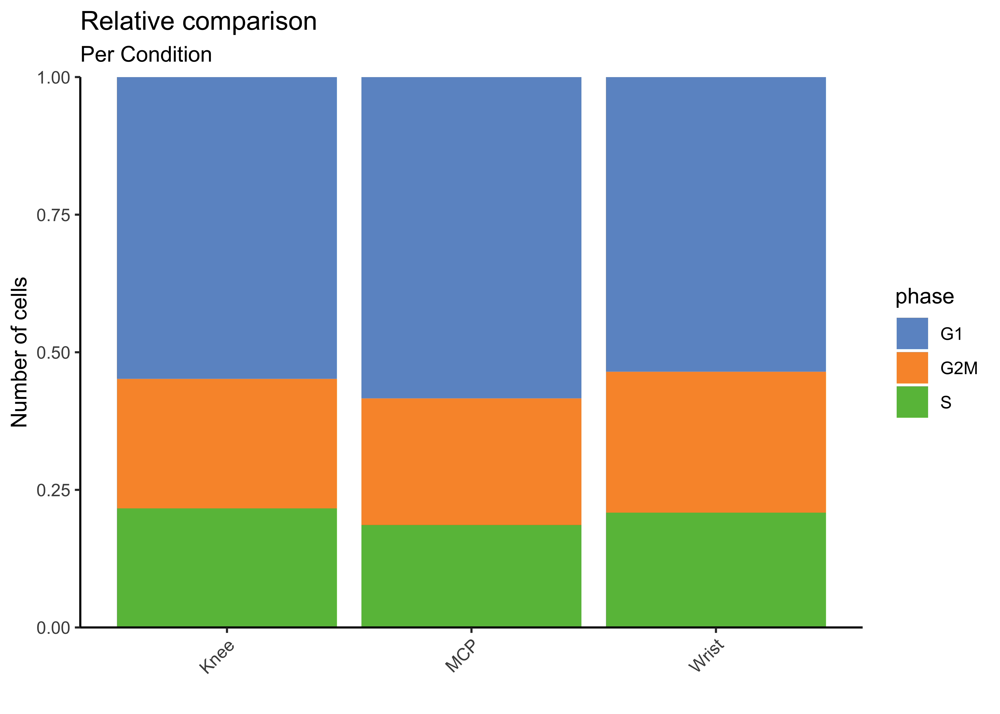

Cellcycle Assignement
04_CellCycle
SarahL.
Jun 26 2024 09:16:55
Last updated: 2024-06-26
Checks: 7 0
Knit directory: RA_SingleCellAnalysis/
This reproducible R Markdown analysis was created with workflowr (version 1.7.1). The Checks tab describes the reproducibility checks that were applied when the results were created. The Past versions tab lists the development history.
Great! Since the R Markdown file has been committed to the Git repository, you know the exact version of the code that produced these results.
Great job! The global environment was empty. Objects defined in the global environment can affect the analysis in your R Markdown file in unknown ways. For reproduciblity it’s best to always run the code in an empty environment.
The command set.seed(20240328) was run prior to running
the code in the R Markdown file. Setting a seed ensures that any results
that rely on randomness, e.g. subsampling or permutations, are
reproducible.
Great job! Recording the operating system, R version, and package versions is critical for reproducibility.
Nice! There were no cached chunks for this analysis, so you can be confident that you successfully produced the results during this run.
Great job! Using relative paths to the files within your workflowr project makes it easier to run your code on other machines.
Great! You are using Git for version control. Tracking code development and connecting the code version to the results is critical for reproducibility.
The results in this page were generated with repository version 5887ab5. See the Past versions tab to see a history of the changes made to the R Markdown and HTML files.
Note that you need to be careful to ensure that all relevant files for
the analysis have been committed to Git prior to generating the results
(you can use wflow_publish or
wflow_git_commit). workflowr only checks the R Markdown
file, but you know if there are other scripts or data files that it
depends on. Below is the status of the Git repository when the results
were generated:
Ignored files:
Ignored: .DS_Store
Ignored: .Rhistory
Ignored: .Rproj.user/
Ignored: analysis/.DS_Store
Ignored: data/.DS_Store
Ignored: data/cellbender_data_h5/
Ignored: data/spatial/
Ignored: output/00_DoubletDetection.rds
Ignored: output/00_sce_DataPreparation.rds
Ignored: output/01_sce_QualityControl.rds
Ignored: output/01_sce_QualityControl_cellfiltered.rds
Ignored: output/02_sce_DimensionalityReduction.rds
Ignored: output/03_sce_Integration_Batchelor.rds
Ignored: output/03_sce_Integration_Harmony.rds
Ignored: output/04_sce_CellCycle.rds
Ignored: output/05_sce_CelltypeAnnotation.rds
Ignored: output/05_sce_Clustering.rds
Ignored: output/06_sce_CelltypeAnnotation.rds
Ignored: output/07_sce_SC_Bcell.rds
Ignored: output/07_sce_SC_Dendritic.rds
Ignored: output/07_sce_SC_Dendritic_Anno.rds
Ignored: output/07_sce_SC_Endothelial.rds
Ignored: output/07_sce_SC_Endothelial_Anno.rds
Ignored: output/07_sce_SC_Fibroblast.rds
Ignored: output/07_sce_SC_Fibroblast_Anno.rds
Ignored: output/07_sce_SC_Macrophage.rds
Ignored: output/07_sce_SC_Macrophage_Anno.rds
Ignored: output/07_sce_SC_Mast.rds
Ignored: output/07_sce_SC_Merge.rds
Ignored: output/07_sce_SC_Neutrophil.rds
Ignored: output/07_sce_SC_Plasma.rds
Ignored: output/07_sce_SC_SmoothMuscle.rds
Ignored: output/07_sce_SC_Tcell.rds
Ignored: output/07_sce_SC_Tcell_Anno.rds
Ignored: output/08_DifferentialAbundance_miloR.rds
Ignored: output/10_sce_CellChat_Knee.rds
Ignored: output/10_sce_CellChat_MCP.rds
Ignored: output/10_sce_CellChat_Wrist.rds
Ignored: output/Cluster_Marker_Genes.xlsx
Ignored: output/Knee_KvM.csv
Ignored: output/Knee_KvW.csv
Ignored: output/MAST_output/
Ignored: output/MCP_KvM.csv
Ignored: output/MCP_MvW.csv
Ignored: output/ManualAnno_L0_Wilcoxon.xlsx
Ignored: output/ManualAnno_L1_Wilcoxon.xlsx
Ignored: output/Wrist_KvW.csv
Ignored: output/Wrist_MvW.csv
Ignored: renv/.DS_Store
Ignored: renv/library/
Ignored: renv/staging/
Untracked files:
Untracked: analysis/07_SubClustering_Merge.Rmd
Untracked: analysis/08_DifferentialExpression_EdgeR.Rmd
Untracked: analysis/08_DifferentialExpression_MAST.Rmd
Untracked: analysis/08_DifferentialExpression_Pseudobulk.Rmd
Untracked: analysis/08_DifferentialExpression_muscat.Rmd
Untracked: analysis/09_DifferentialAbundance_miloR.Rmd
Untracked: analysis/10_EnrichmentAnalysis.Rmd
Untracked: analysis/11_CellChat.Rmd
Untracked: analysis/99_Plotting.Rmd
Untracked: analysis/Spatial_hand.Rmd
Untracked: analysis/Spatial_knee.Rmd
Unstaged changes:
Modified: analysis/02_DimensionalityReduction.Rmd
Modified: analysis/03_Integration_Batchelor.Rmd
Modified: analysis/06_CelltypeAnnotation.Rmd
Deleted: analysis/07_DifferentialExpression_EdgeR.Rmd
Deleted: analysis/07_DifferentialExpression_MAST.Rmd
Deleted: analysis/07_DifferentialExpression_Pseudobulk.Rmd
Deleted: analysis/07_DifferentialExpression_muscat.Rmd
Modified: analysis/07_SubClustering.Rmd
Modified: analysis/07_SubClustering_Annotation.Rmd
Deleted: analysis/08_DifferentialAbundance_miloR.Rmd
Deleted: analysis/09_EnrichmentAnalysis.Rmd
Deleted: analysis/10_Plotting.Rmd
Deleted: analysis/Ege_06_SC_Fibroblast.Rmd
Deleted: analysis/OLD06_SubClustering.Rmd
Modified: code/standard_libraries.R
Modified: renv.lock
Note that any generated files, e.g. HTML, png, CSS, etc., are not included in this status report because it is ok for generated content to have uncommitted changes.
These are the previous versions of the repository in which changes were
made to the R Markdown (analysis/04_CellCycle.Rmd) and HTML
(docs/04_CellCycle.html) files. If you’ve configured a
remote Git repository (see ?wflow_git_remote), click on the
hyperlinks in the table below to view the files as they were in that
past version.
| File | Version | Author | Date | Message |
|---|---|---|---|---|
| Rmd | 299e5e4 | sarloet | 2024-06-06 | fix |
| html | 299e5e4 | sarloet | 2024-06-06 | fix |
| Rmd | 8be1325 | sarloet | 2024-06-05 | renv |
Cell Cycle
Setup
Standard packages
library(here)
source(here("code", "standard_libraries.R"))Additional Packages
#Load Packages
suppressPackageStartupMessages({
library(Seurat)
})Set Parameter
set.seed(123)
bpp <- BiocParallel::MulticoreParam(parallel::detectCores()-1, RNGseed=123)
path <- here::here()Load Data
## RA DATASET
sce <- readRDS(file = paste0(path,'/output/03_sce_Integration_Batchelor.rds'))Explore Dataset
#Dimensions of count matrix
dim(sce)[1] 30488 64639Determine Cell cycle
Define function
## RA DATASET
CellCycle <- function(sce)
{
#Create empty column in sce
sce$S.Score <- rep(NA,ncol(sce))
sce$G2M.Score <- rep(NA,ncol(sce))
sce$phase <- rep(NA,ncol(sce))
#Change to gene symbol whenever possible
rowData(sce)$UniqID <-rownames(sce)
rownames(sce) <- uniquifyFeatureNames(rowData(sce)$ENSEMBL, rowData(sce)$Symbol)
#CellCycleScoring through seurat
s.genes = cc.genes$s.genes
g2m.genes = cc.genes$g2m.genes
so <- Seurat::CreateSeuratObject(as.matrix(counts(sce)))
so <- Seurat::NormalizeData(so)
so <- Seurat::FindVariableFeatures(so, selection.method = "vst")
so <- Seurat::ScaleData(so, features = rownames(so))
so <- Seurat::CellCycleScoring(so, s.features = s.genes, g2m.features = g2m.genes, set.ident = TRUE)
#Add scores to sce
sce$S.Score <- so$S.Score
sce$G2M.Score <- so$G2M.Score
sce$phase <- so$Phase
return(sce)
}Run Fnction
## RA DATASET
sce<-CellCycle(sce)Plot the Cellcycle phases
PCA
#Plot PCA after data integration
plotReducedDim(sce, dimred="MNN_reduced", colour_by="phase",point_alpha=0.8,point_size=0.1) +
labs( x='PCA 1', y='PCA 2' )+
ggtitle("PCA colored by Cellcycle")+
guides(colour = guide_legend(override.aes = list(size=2)))
| Version | Author | Date |
|---|---|---|
| 299e5e4 | sarloet | 2024-06-06 |
PCA facet by Cellcycle phase
plotReducedDim(sce, dimred="PCA_reduced", colour_by="phase",point_alpha=0.8,point_size=0.1) +
facet_wrap(~sce$phase)+
theme(strip.background=element_rect(fill="white"))+
guides(colour = guide_legend(override.aes = list(size=2)))+
labs( x='PCA 1', y='PCA 2' )
| Version | Author | Date |
|---|---|---|
| 299e5e4 | sarloet | 2024-06-06 |
UMAP
#Plot UMAP after data integration
plotReducedDim(sce, dimred="MNN_UMAP_reduced", colour_by="phase",point_alpha=0.7,point_size=0.1) +
ggtitle("UMAP colored by Cellcycle")+
labs( x='UMAP 1', y='UMAP 2' )+
guides(colour = guide_legend(override.aes = list(size=2)))
| Version | Author | Date |
|---|---|---|
| 299e5e4 | sarloet | 2024-06-06 |
Frequencies of Cellcycle phase per Sample
ClusterInfo <- as.data.frame(colData(sce)) %>%
group_by(phase, Sample,Joint.Location) %>%
summarise(cells = n(),.groups = 'drop') Absolute comparison
ggplot(data=ClusterInfo, aes(x=Sample,y=cells, fill=phase)) +
geom_bar(stat="identity", position="stack") +
labs(title="Absolute comparison",subtitle="Per Sample",x="",y="Number of cells")+
theme_classic()+
scale_fill_manual( values=c("#6D96CC","#F99636","#68BD49"),name = "phase" )+
theme(axis.text.x = element_text(angle = 45,hjust=1), axis.ticks.x=element_blank())+
scale_y_continuous(expand = c(0,0))
| Version | Author | Date |
|---|---|---|
| 299e5e4 | sarloet | 2024-06-06 |
Relative comparison
ggplot(data=ClusterInfo,aes(x=Sample, y=cells, fill=phase)) +
geom_bar(stat="identity", position="fill") +
labs(title="Relative comparison",subtitle="Per Sample",x="",y="Number of cells")+
theme_classic()+
scale_fill_manual( values=c("#6D96CC","#F99636","#68BD49"),name = "phase" )+
theme(axis.text.x = element_text(angle = 45,hjust=1))+
scale_y_continuous(expand = c(0,0))
| Version | Author | Date |
|---|---|---|
| 299e5e4 | sarloet | 2024-06-06 |
Frequencies of celltypes in clusters per Condition
ClusterInfo <- as.data.frame(colData(sce)) %>%
group_by(phase,Joint.Location) %>%
summarise(cells = n(),.groups = 'drop') Absolute comparison
ggplot(data=ClusterInfo, aes(x=Joint.Location,y=cells, fill=phase)) +
geom_bar(stat="identity", position="stack") +
labs(title="Absolute comparison",subtitle="Per Condition",x="",y="Number of cells")+
theme_classic()+
scale_fill_manual( values=c("#6D96CC","#F99636","#68BD49"),name = "phase" )+
theme(axis.text.x = element_text(angle = 45,hjust=1))+
scale_y_continuous(expand = c(0,0))
| Version | Author | Date |
|---|---|---|
| 299e5e4 | sarloet | 2024-06-06 |
Relative comparison
ggplot(data=ClusterInfo,aes(x=Joint.Location, y=cells, fill=phase)) +
geom_bar(stat="identity", position="fill") +
labs(title="Relative comparison",subtitle="Per Condition",x="",y="Number of cells")+
theme_classic()+
scale_fill_manual( values=c("#6D96CC","#F99636","#68BD49"),name = "phase" )+
theme(axis.text.x = element_text(angle = 45,hjust=1))+
scale_y_continuous(expand = c(0,0))
| Version | Author | Date |
|---|---|---|
| 299e5e4 | sarloet | 2024-06-06 |
Save the dataset
saveRDS(sce, file =paste0(path,'/output/04_sce_CellCycle.rds'))
sessionInfo()R version 4.3.3 (2024-02-29)
Platform: x86_64-apple-darwin20 (64-bit)
Running under: macOS Sonoma 14.4.1
Matrix products: default
BLAS: /Library/Frameworks/R.framework/Versions/4.3-x86_64/Resources/lib/libRblas.0.dylib
LAPACK: /Library/Frameworks/R.framework/Versions/4.3-x86_64/Resources/lib/libRlapack.dylib; LAPACK version 3.11.0
locale:
[1] en_US.UTF-8/en_US.UTF-8/en_US.UTF-8/C/en_US.UTF-8/en_US.UTF-8
time zone: Europe/Warsaw
tzcode source: internal
attached base packages:
[1] stats4 stats graphics grDevices datasets utils methods
[8] base
other attached packages:
[1] Seurat_5.0.3 SeuratObject_5.0.2
[3] sp_2.1-4 tidyr_1.3.1
[5] org.Hs.eg.db_3.18.0 AnnotationDbi_1.64.1
[7] clusterProfiler_4.10.1 viridis_0.6.5
[9] viridisLite_0.4.2 gridExtra_2.3
[11] scran_1.30.2 scater_1.30.1
[13] scuttle_1.12.0 SingleCellExperiment_1.24.0
[15] SummarizedExperiment_1.32.0 Biobase_2.62.0
[17] GenomicRanges_1.54.1 GenomeInfoDb_1.38.8
[19] IRanges_2.36.0 S4Vectors_0.40.2
[21] BiocGenerics_0.48.1 MatrixGenerics_1.14.0
[23] matrixStats_1.3.0 dplyr_1.1.4
[25] ggplot2_3.5.1 BiocParallel_1.36.0
[27] here_1.0.1 workflowr_1.7.1
loaded via a namespace (and not attached):
[1] spatstat.sparse_3.0-3 fs_1.6.4
[3] bitops_1.0-7 enrichplot_1.22.0
[5] HDO.db_0.99.1 httr_1.4.7
[7] RColorBrewer_1.1-3 sctransform_0.4.1
[9] tools_4.3.3 utf8_1.2.4
[11] R6_2.5.1 uwot_0.2.2
[13] lazyeval_0.2.2 withr_3.0.0
[15] progressr_0.14.0 cli_3.6.2
[17] spatstat.explore_3.2-7 fastDummies_1.7.3
[19] scatterpie_0.2.2 labeling_0.4.3
[21] sass_0.4.9 spatstat.data_3.0-4
[23] pbapply_1.7-2 ggridges_0.5.6
[25] yulab.utils_0.1.4 gson_0.1.0
[27] DOSE_3.28.2 parallelly_1.37.1
[29] limma_3.58.1 rstudioapi_0.16.0
[31] RSQLite_2.3.6 generics_0.1.3
[33] gridGraphics_0.5-1 spatstat.random_3.2-3
[35] ica_1.0-3 GO.db_3.18.0
[37] Matrix_1.6-5 ggbeeswarm_0.7.2
[39] fansi_1.0.6 abind_1.4-5
[41] lifecycle_1.0.4 whisker_0.4.1
[43] yaml_2.3.8 edgeR_4.0.16
[45] qvalue_2.34.0 SparseArray_1.2.4
[47] Rtsne_0.17 grid_4.3.3
[49] blob_1.2.4 promises_1.3.0
[51] dqrng_0.4.0 crayon_1.5.2
[53] miniUI_0.1.1.1 lattice_0.22-5
[55] beachmat_2.18.1 cowplot_1.1.3
[57] KEGGREST_1.42.0 pillar_1.9.0
[59] knitr_1.45 metapod_1.10.1
[61] fgsea_1.28.0 future.apply_1.11.2
[63] codetools_0.2-19 fastmatch_1.1-4
[65] leiden_0.4.3.1 glue_1.7.0
[67] getPass_0.2-4 ggfun_0.1.4
[69] data.table_1.15.4 vctrs_0.6.5
[71] png_0.1-8 treeio_1.26.0
[73] spam_2.10-0 gtable_0.3.5
[75] cachem_1.1.0 xfun_0.44
[77] S4Arrays_1.2.1 mime_0.12
[79] tidygraph_1.3.1 survival_3.5-8
[81] statmod_1.5.0 bluster_1.12.0
[83] fitdistrplus_1.1-11 ROCR_1.0-11
[85] nlme_3.1-164 ggtree_3.10.1
[87] bit64_4.0.5 RcppAnnoy_0.0.22
[89] rprojroot_2.0.4 bslib_0.7.0
[91] irlba_2.3.5.1 vipor_0.4.7
[93] KernSmooth_2.23-22 colorspace_2.1-0
[95] DBI_1.2.2 tidyselect_1.2.1
[97] processx_3.8.4 bit_4.0.5
[99] compiler_4.3.3 git2r_0.33.0
[101] BiocNeighbors_1.20.2 plotly_4.10.4
[103] DelayedArray_0.28.0 shadowtext_0.1.3
[105] scales_1.3.0 lmtest_0.9-40
[107] callr_3.7.6 goftest_1.2-3
[109] stringr_1.5.1 digest_0.6.35
[111] spatstat.utils_3.0-4 rmarkdown_2.27
[113] XVector_0.42.0 htmltools_0.5.8.1
[115] pkgconfig_2.0.3 sparseMatrixStats_1.14.0
[117] highr_0.10 fastmap_1.2.0
[119] htmlwidgets_1.6.4 rlang_1.1.3
[121] shiny_1.8.1.1 DelayedMatrixStats_1.24.0
[123] farver_2.1.2 jquerylib_0.1.4
[125] zoo_1.8-12 jsonlite_1.8.8
[127] GOSemSim_2.28.1 BiocSingular_1.18.0
[129] RCurl_1.98-1.14 magrittr_2.0.3
[131] GenomeInfoDbData_1.2.11 ggplotify_0.1.2
[133] dotCall64_1.1-1 patchwork_1.2.0
[135] munsell_0.5.1 Rcpp_1.0.12
[137] ape_5.8 reticulate_1.37.0
[139] stringi_1.8.4 ggraph_2.2.1
[141] zlibbioc_1.48.2 MASS_7.3-60.0.1
[143] plyr_1.8.9 parallel_4.3.3
[145] listenv_0.9.1 ggrepel_0.9.5
[147] deldir_2.0-4 Biostrings_2.70.3
[149] graphlayouts_1.1.1 splines_4.3.3
[151] tensor_1.5 locfit_1.5-9.9
[153] ps_1.7.6 igraph_2.0.3
[155] spatstat.geom_3.2-9 RcppHNSW_0.6.0
[157] reshape2_1.4.4 ScaledMatrix_1.10.0
[159] evaluate_0.23 renv_1.0.7
[161] BiocManager_1.30.23 tweenr_2.0.3
[163] httpuv_1.6.15 RANN_2.6.1
[165] purrr_1.0.2 polyclip_1.10-6
[167] scattermore_1.2 future_1.33.2
[169] ggforce_0.4.2 rsvd_1.0.5
[171] xtable_1.8-4 RSpectra_0.16-1
[173] tidytree_0.4.6 later_1.3.2
[175] tibble_3.2.1 aplot_0.2.2
[177] memoise_2.0.1 beeswarm_0.4.0
[179] cluster_2.1.6 globals_0.16.3